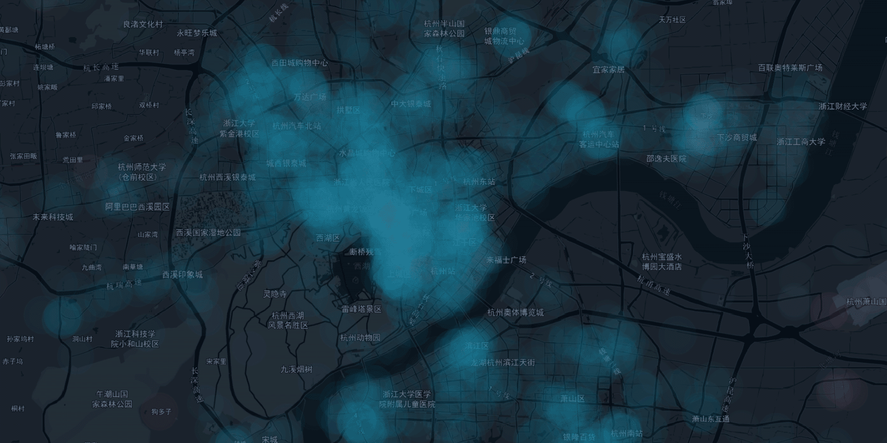

发现城市时空中的情感

日出日落，城市在翕动。这是人的城市。
它从来都不是冷漠荒凉，绿洲中的孤岛。经纬度小数点后的每一位都是一段故事：或生活琐碎，或悲欢离合。宏观数据下的每一个指标似乎都抹去了人作为平凡个体的心灵触动。而我们希望发现它们。
城市情感是一个致力于发现城市不同时空下人们情感状态的项目。我们试图建立一种基于环境的情感模型，将情感信息与地理空间和时间相关联，记录过去、表达现在和预测未来。
我们已经描绘出了2017年下半年中杭州市的情感图景，希望这个萌芽能让城市中的人们过得更加幸福。
我们得到城市空间中情感信息的方法是完全基于环境的，这使得模型具有实时计算情感信息的可能。
在当前的 DEMO 中，我们将高维数据用各种直观的方式展现了出来，包括泡泡图、热力图、雷达图和日历图等。让时空中情感的呈现不再复杂难解。
在这个 DEMO 中一探究竟。
从红色悬浮按钮开始，将自己置入指定时空之中。在这里找到操控途径与时间维度上的可视化内容。
在弹出的选单中，进行简单设定。切换选项卡，看到时间上情感的变化。